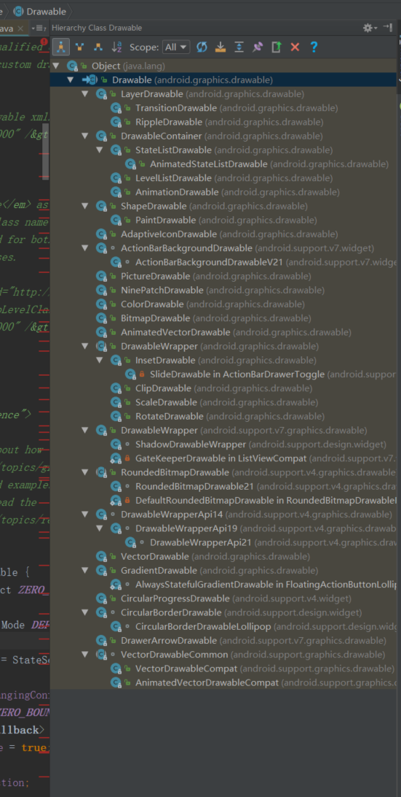
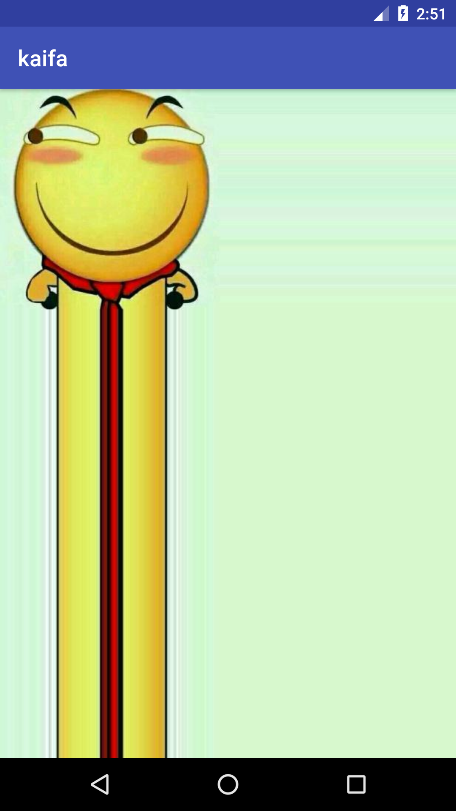
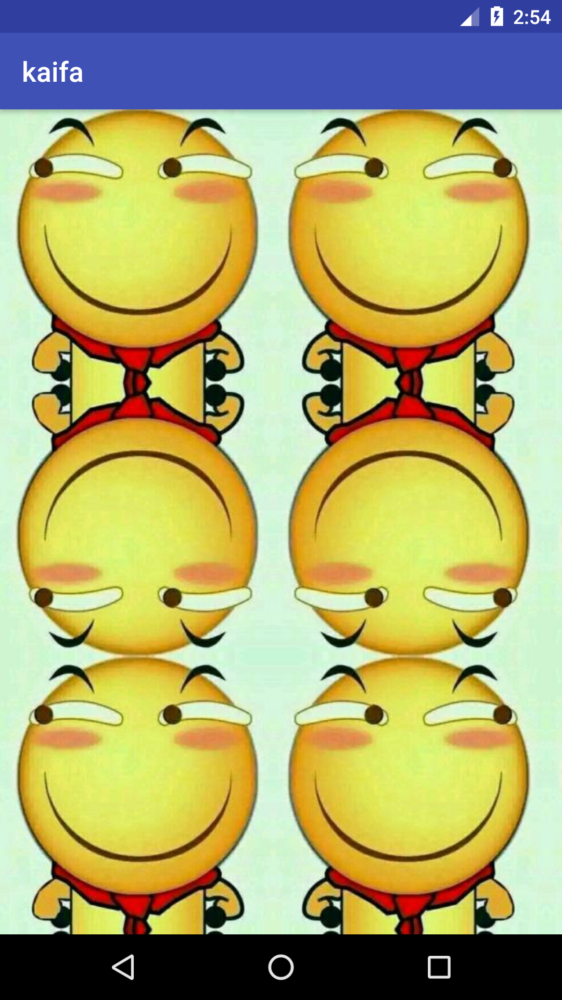
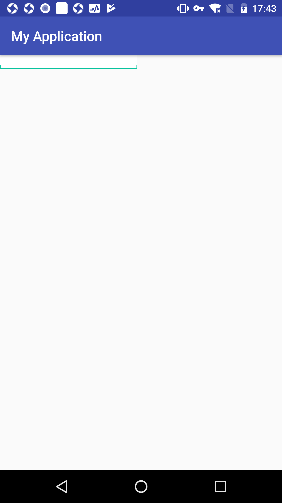
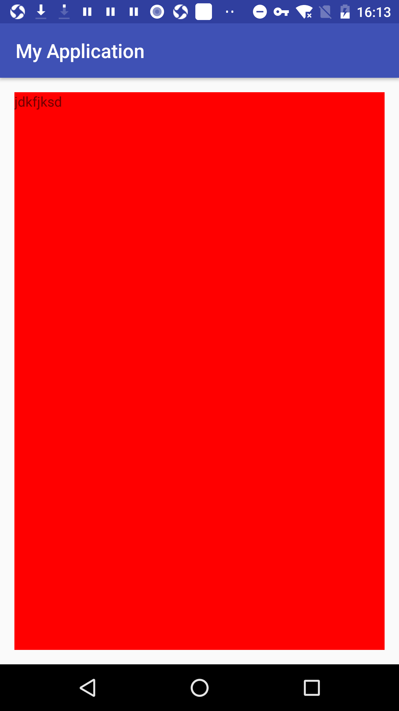
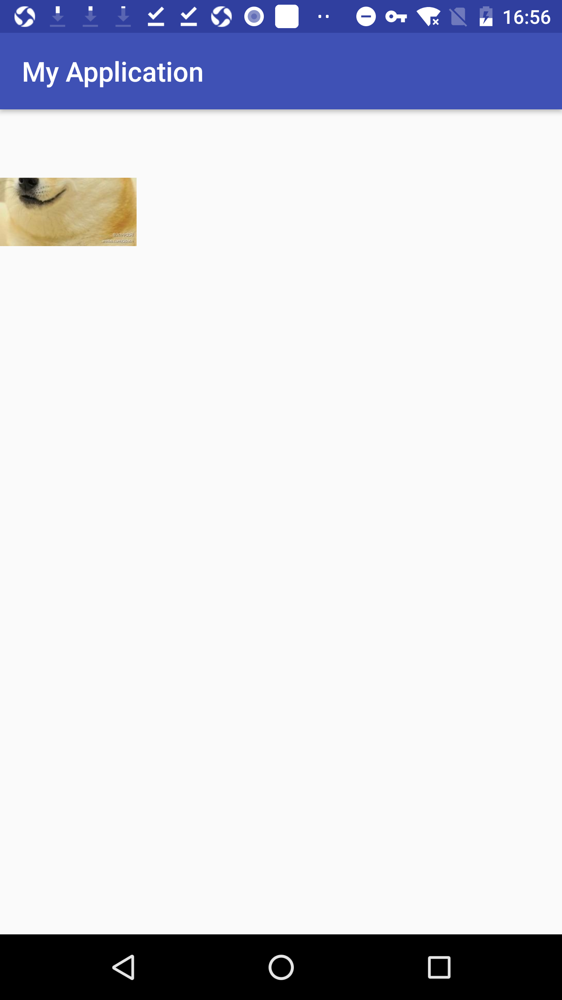

本章的话题是Android的drawable，drawable表示一种可以在Canvas上进行绘制的抽象的概念，他的种类有很多，这里介绍一下。然后drawable在定制一些特殊View时很方便。他有很多优点，比如使用简单，比自定义View成本低很多。其次，非图片类型的Drawable占用空间小，对减小apk体积有很大的帮助。
Drawable简介
drawable有很多种

在实际的开发中，Drawable常被用来作为View的背景使用，Drawable一般是通过XML来定义的。当然，我们可以通过代码创建具体的drawable对象。只是用代码创建比较复杂。
Drawable的分类
看到上面的截图没有，种类有很多，这里就主要讲解几种常用的，比如BitmapDrawable，ShapeDrawable,layerDrawable,StateListDrawable等，这里就不一一列举了，下面分别介绍一下他们的细节
BitmapDrawable
这个是最简单的Drawable了，他表示的就是一张图片。在实际开发过程中，我们可以直接引用原始的图片就可以了，但是也可以使用XML来描述他，通过XML来描述BitmapDrawable可以设置更多的效果：1
2
3
4
5
6
7
8
9
10
11<?xml version="1.0" encoding="utf-8"?>
<bitmap xmlns:android="http://schemas.android.com/apk/res/android"
android:src="@mipmap/ic_launcher"
android:antialias="false"
android:dither="false"
android:gravity="center"
android:mipMap="false"
android:tileMode="clamp"
>
</bitmap>
看一下这些属性的含义
- android:src
这个很简单，就是图片资源的id - android:antialias
是否开启图片抗锯齿功能，开启后会让图片变得平滑，同时也会在一定程度上面降低图片的清晰度，但是这个降低的幅度可以忽略。所以应当开启这个选项。 - android:dither
是否开启抖动效果。当图片的像素配置和手机屏幕的像素配置不一致的时候，开启这个选项可以让高质量的图片在低质量的屏幕上还能保持比较好的显示效果，比如图片的色彩模式是ARGB8888，但是设备所支持的色彩模式为RGB555，这个时候开启抖动选项可以让图片不会过于失真。在ANdroiid中创建的Bitmap一般会选用ARGB8888这个模式，即ARGB各占8位，在这种色彩模式下，一个像素所占的大小为4个字节，一个像素的位数总和越高，图像也就越逼真。因此，这个也应该开启 - android:filter
是否开启过滤效果，当图片尺寸被拉伸或者压缩时，开启过滤效果可以保持较好的显示效果，因此也应该开启 - android:gravity
当图片大小小于容器大小是，可以设置这个选项来定位图片，这个属性的可选项较多，不过可以使用|来组合使用
| 可选项 | 含义 |
|---|---|
| top | 将图片放在容器顶部，不改变图片大小 |
| bottom | 将图片放在容器底部，不改变图片大小 |
| left | 将图片放在容器左部，不改变图片大小 |
| right | 将图片放在容器右部，不改变图片大小 |
| center_vertical | 将图片竖直居中，不改变图片大小 |
| center_horizontal | 将图片水平居中，不改变图片大小 |
| center | 将图片居中，不改变图片大小 |
| fill_vertical | 将图片竖直方向填充容器 |
| fill_horizontal | 将图片水平方向填充容器 |
| fill | 将图片填充容器，包含水平和竖直两个方向，这个是默认值 |
| clip_vertical | 附加选项，表示竖直方向剪裁，较少使用 |
| clip_horizontal | 附加选项，表示水平方向剪裁，较少使用 |
android:mipMap
这是一种图像相关的处理技术，也叫纹理映射，比较抽象，这里也不对他进行深究，默认值为false，这个选项开发中不常用，具体可以看一下 https://baike.baidu.com/item/%E7%BA%B9%E7%90%86%E6%98%A0%E5%B0%84/7366346 了解一下。这个做游戏会用的比较多android:tileMode
平铺模式，这个选项有如下几个值，disabled，clamp，repeat，mirror。其中disabled表示关闭平铺模式，这个是默认值。当开启平铺模式之后，gravity属性会被忽略，这里主要说一下repeat，mirror，clamp的区别。
这里直接看效果图。这个样子比较明显
clamp效果
1 | <?xml version="1.0" encoding="utf-8"?> |

mirror效果
1 | <?xml version="1.0" encoding="utf-8"?> |

repeat效果
1 | <?xml version="1.0" encoding="utf-8"?> |
可以看到明显的区别
接下来介绍一下ninePatchDrawable，他表示一张.9格式的图片，.9格式的图片可以自动的根据所需要的宽和高进行缩放并保证不失真，之所以把它和BitmapDrawable放在一起介绍是因为他们都表示一张图片。和BitmapDrawable一样，在实际使用中直接引用图片即可。但是也可以通过xml来描述.9图
1 | <?xml version="1.0" encoding="utf-8"?> |
可以把它作为背景使用
ShapeDrawable
shapeDrable是也是一个常用的drawable。他的作用是绘制一些比较复杂的图形，比如圆形
1 | <?xml version="1.0" encoding="utf-8"?> |
这里先来看一下一个最基本的shape写法，然后分析一下常用的几个属性
android:shape
这个表示图形的形状，有四个选项rectangle(矩形)，oval（椭圆），line(横线)，ring（圆环）。他默认是矩形的，另外，line和ring这两个选项必须要通过这个标签来指定线条的宽度和颜色信息，否则将无法达到预期的显示效果，针对ring这个形状，有5个特殊的属性：android:innerRadius,android:thickness,android:innerRadiusRatio,android:thicknessRatio和android:useLevel，他们的含义 |value|desciption|
|:—:|:—:|
|android:innerRadius|圆环的内半径，和innerRadiusRatio属性同时存在，以innerRadius为准|
|android:thickness|圆环厚度，即外半径减去内半径的大小，和innerRadiusRatio同时存在，以innerRadius为准|
|android:innerRadiusRatio|外半径占整个drawable宽度的比例。默认值为9，如果值为n，那么内半径的宽度=宽度/n|
|android:thicknessRatio|厚度占整个drawable宽度的比例。默认值为3，如果值为n，那么厚度的宽度=厚度/n|
|android:useLevel|一般使用false，否则无法达到效果，除非他被当做LevelListDrawable|conners
表示4个角的角度，他只适用于shape，这里是指圆角的程度，用px或者dp来表示。- android:radius 为四个角度同时设定相同的角度，优先级低
- android:bottomLeftRadius 不同角度的高度，优先级高
- android:bottomRightRadius
- android:topLeftRadius
- android:topRightRadius
gradient 他与sold标签互相排斥，其中solid表示纯色填充，而gradient则表示渐变效果，gradient有如下几个属性
- angle 渐变的角度，默认值是0，其值必须是45的倍数，0表示从左到右，90表示从下到上，具体的效果需要看显示的效果来微调。
- centerX 渐变的中心的横坐标
- centerY 渐变的中心的纵坐标
- startColor 开始颜色
- centerColor 中间颜色
- endColor 渐变的结束色
- gradientRadius 渐变半径 仅当type=radial是有效
- useLevel 一般为false，当drawable所谓stateListDrawable使用时有效
- type 渐变类别，有linear（线性渐变），radial（径向渐变），sweep（扫描渐变）三种，其中默认是线性渐变
- sold 表示填充色
- stroke 描边
- padding 表示空白，不是shape的空白，而是View的空白
- size 表示这个shape的固有大小 如果设置，那么这个就是shape的固有大小，但是作为背景时会被拉伸。
layerDrawable
laywerDrawable对应的XML是标签layer-list，他表示一种层次化的drawable集合，通过不同的drawable放置在不同层面上从而达到叠加后的效果1
2
3
4
5
6<?xml version="1.0" encoding="utf-8"?>
<layer-list xmlns:android="http://schemas.android.com/apk/res/android">
<item android:id="@+id/ddd" android:drawable="@drawable/huaji2"/>
<item android:id="@+id/ddd333" android:drawable="@drawable/huaji2"/>
</layer-list>
每一个item都表示一个drawable，item的结构也比较简单，下面的会覆盖上层的item，通过合理分层可以实现一些特殊的效果
这里实现一个微信中文本输入框的效果
1 | <?xml version="1.0" encoding="utf-8"?> |

StateListDrawable
这个对应selector标签，表示drawable集合，每个drawable都对应着View的一种状态，这样系统会根据View的状态来选择合适的drawable。1
2
3
4
5
6
7
8
9
10
11
12
13
14
15
16
17
18
19
20
21
22<?xml version="1.0" encoding="utf-8"?>
<selector xmlns:android="http://schemas.android.com/apk/res/android">
<item
android:drawable="@drawable/test3"
android:state_accelerated="true"
android:state_active="true"
android:state_checkable="true"
android:state_checked="true"
android:state_drag_can_accept="true"
android:state_drag_hovered="true"
android:state_enabled="true"
android:state_first="true"
android:state_focused="true"
android:state_hovered="true"
android:state_last="true"
android:state_middle="true"
android:state_pressed="true"
android:state_selected="true"
android:state_single="true"
android:state_window_focused="true"
android:state_activated="true"/>
</selector>
可以看一下有这么多种状态量
- android:constantSize
StateListDrawable的固定大小是不随着其状态的改变而改变的，改变状态会导致stateListDrawable切换到具体的drawable,而不同的Drawable具有不同的固定大小，True表示StateListDrawable的固定大小保持不变，这是他的固定大小是内部所有drawable的最大值，false则会随着状态的改变而改变，此选项默认值为false - android:mDisallowInterceptTouchEventOnHeader
是否开启抖动效果，之前说过，最好开启 - android:variablePadding
stateListDrawable的padding表示你是否随着其状态改变而改变，true表示会随着状态的改变而改变，false表示stateListDrawable的padding是内部所有Drawable的padding的最大值，默认值是false。建议不要开启
| 状态 | 含义 |
|---|---|
| android:state_pressed | 表示按下状态，比如Button被按下后没有松开时的状态 |
| android:state_focus | 表示View已经获取了焦点 |
| android:state_selected | 表示用户选择了View |
| android:state_checked | 表示用户选中了View，一般适用于CheckBox这类在选中和非选中状态之前切换的View |
| android:state_enable | 表示View当前处于可用状态 |
LevelListDrawable
LevelListDrawable对应于level-list标签，他同样表示一个drawable集合，集合中的每一个Drawable都有一个等级level的概念，根据不同的等级，LevelListDrawable会切换为对应的Drawable，他的语法如下1
2
3
4
5
6
7<?xml version="1.0" encoding="utf-8"?>
<level-list xmlns:android="http://schemas.android.com/apk/res/android">
<item android:drawable="@drawable/test3"
android:maxLevel="1"
android:minLevel="2"
/>
</level-list>
上面的语法中，每个item表示一个drawable，并且有对应的等级范围，由android：min_level和android:maxLevel来指定，最大值和最小值会对应此item中的drawable。下面是一个例子，当他作为View的背景时。可以通过drawable的setLevel方法来设置不同的等级从而切换不同的drawable。如果它被用来所imageView的背前景，还可以通过imageView的setImageLevel方法来切换drawable，最后的drawable的顶级是有范围的，即0-10000，最小等级是0，也就是默认值，最大等级是10000。
TransitionDrawable
TransitionDrawable对应于transition标签，他用于实现两个drawable之间的淡入淡出效果，他的语法如下
1 | <?xml version="1.0" encoding="utf-8"?> |
这样就定义了一组淡入淡出变换
然后通过1
2
3
4TextView tv = findViewById(R.id.tx);
TransitionDrawable background = (TransitionDrawable) tv.getBackground();
background.startTransition(1000);
background.reverseTransition(1000);
通过这两种方式进行调用，注意，这个一开始两张图片就会叠加在一起，然后会有一个淡入淡出的过程。
从滑稽头像变成狗狗
insetDrawable
这个对应inset标签，他可以将其他drawable内嵌到自己当中，可以在周围流出一定的间距，当一个View希望自己的背景比自己的实际区域小的时候就可以通过insetDrawable
1 | <?xml version="1.0" encoding="utf-8"?> |
1 | <?xml version="1.0" encoding="utf-8"?> |

ScaleDrawable
对应的标签是scale，他可以根据自己的等级将指定的drawable缩放到一定的比例。1
2
3
4
5
6<?xml version="1.0" encoding="utf-8"?>
<scale xmlns:android="http://schemas.android.com/apk/res/android"
android:drawable="@drawable/test333"
android:level="10"
android:scaleHeight="50%">
</scale>
注意：这里的scaleHeight和scaleWidth是要百分比，是要缩小或者放大的百分比，如果是scaleHeight=25%，那么就是高度缩小25%
这个是高度缩小25% 本来是全屏的
scaleDrawable有一点难以理解，这里我们先要弄明白他的等级这个概念，android:level的默认值是0，表示不可见，这个是默认值，想要scaleDrawable可见，他的等级不能为0，这一点可以从源码看出来
1 | @Override |
如果等级为0，是不会绘制的。
这里在看一下他的onBoundsChanges方法，入下所示
1 | @Override |
在这里可以看到drawable的大小和等级以及缩放比例的关系，这里那高度来说1
2
3
4
5int h = bounds.height();
if (mState.mScaleHeight > 0) {
final int ih = min ? d.getIntrinsicHeight() : 0;
h -= (int) ((h - ih) * (MAX_LEVEL - level) * mState.mScaleHeight / MAX_LEVEL);
}
一般ih都是0，所以上面可以简化为 h -= (int) (h (10000 - level) mState.mScaleHeight / 10000)，可见，如果scaleDrawable的级别越大，那么内部的drawable看起来越大，如果scaleDrawable的XML中所指定的缩放比例越大，那么内部的drawable看起来越小，所以看效果，scaleDrawable更加偏向于缩小一个特定的drawable。
1 | TextView tv = findViewById(R.id.tx); |
ClipDrawable
clipDrawable 对应clip标签，他可以根据自己当前的等级来裁切另一个drawable,剪裁方向可以通过clipOrientation和gravity来控制
clipDrawable1
2
3
4
5
6
7
8<?xml version="1.0" encoding="utf-8"?>
<clip xmlns:android="http://schemas.android.com/apk/res/android"
android:clipOrientation="vertical"
android:gravity="bottom"
android:drawable="@drawable/test333">
</clip>
imageView1
2
3
4
5
6
<ImageView
android:id="@+id/tx"
android:src="@drawable/test9"
android:layout_width="100dp"
android:layout_height="100dp" />
设置优先级1
2
3ImageView tv = findViewById(R.id.tx);
ClipDrawable clipDrawable= (ClipDrawable) tv.getDrawable();
lipDrawable.setLevel(5000);

- clipOrientation表示剪裁方向
上面的是竖直方向 - gravity表示从哪开始剪裁
| gravity选项 | 含义 |
|---|---|
| top | 将内部的drawable放在容器的顶部，不改变他的大小，如果为竖直剪裁，那么从顶部开始剪裁 |
| bottom | 将内部的drawable放在容器的底部，不改变他的大小，如果为竖直剪裁，那么从底部开始剪裁 |
| left | 将内部的drawable放在容器的左部，不改变他的大小，如果为水平剪裁，那么从左部开始剪裁 |
| right | 将内部的drawable放在容器的右部，不改变他的大小，如果为水平剪裁，那么从右部开始剪裁 |
| center_vertical | 将内部的drawable放在容器的竖直居中，不改变他的大小，如果为竖直剪裁，那么从底部和头部同时开始剪裁 |
| fill_vertical | 将内部的drawable在竖直方向上填充容器，不改变他的大小，如果为竖直剪裁，那么仅当clipDrawable的等级为0（0表示clipDrawable被完全剪裁，即不可见）时，才能有剪裁行为 |
| center_horizontal | 将内部的drawable放在容器的水平居中，不改变他的大小，如果为水平剪裁，那么从左部和右部同时开始剪裁 |
| fill_horizontal | 将内部的drawable在水平方向上填充容器，不改变他的大小，如果为水平剪裁，那么仅当clipDrawable的等级为0（0表示clipDrawable被完全剪裁，即不可见）时，才能有剪裁行为 |
| center | 将内部的drawable放在容器的居中，不改变他的大小，如果为水平剪裁，那么从左部和右部同时开始剪裁，如果为竖直剪裁，那么从底部和头部同时开始剪裁 |
| fill | 使内部的Drawable在水平和竖直方向上同时填充容器，仅当ClipDrawable的等级为0时，才能有剪裁行为 |
| clip_vertical | 表示竖直方向剪裁，较少使用 |
| clip_horizontal | 表示水平方向剪裁，较少使用 |
前面也提及到他的等级是有范围的，就是0-10000，最小是0，最大是10000，如果是0这个等级，就表示完全剪裁，就是什么都没了，如果是10000，表示不剪裁，如果设置为8000，表示剪裁了20%，对于clipDrawable来说，等级越大，剪裁的部分越小
自定义Drawable
drawable的使用范围很单一，一个是作为imageView中图像来显示，一个是作为View的背景显示，大多数情况下drawable都是以View的背景出现的，drawable的原理很简单，其核心就是draw方法，在之前分析了draw的过程。这里可以通过使用重写drawable的draw方法来自定义drawable
通常我们没有必要去自定义drawable，这是因为自定义的drawable无法在XML中使用，这就降低了自定义Drawable的使用范围，下面演示一个自定义View的过程
1 | public class CustomDrawable extends Drawable { |
如果要实现具体的，可以参考一下BitmapDrawable和ShapeDrawable